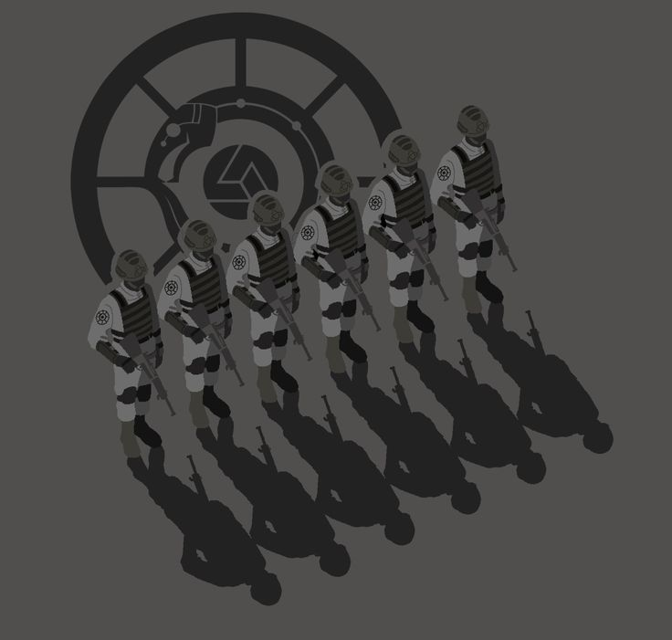

MTF SKYET
A Força-Tarefa Móvel Kappa-10 é uma designação temporária até que seja oficialmente dissolvida ou sancionada. Tem a tarefa estrita de investigar e engajar 'anomalias cibernéticas' usando uma combinação de agentes virtuais (AICs) e pesquisadores da Fundação para rastrear, neutralizar e/ou conter tais ameaças intangíveis.
A Kappa-10 é responsável pela proteção desse site, assim como todos os sistemas digitais da fundação. Além da proteção de Kappa-10, este site consta com os seguintes serviços de proteção:
- Uso de Agentes Meméticos para controle e manipulação mental
- Intranet da Fundação Necessária
- Código de Verificação de Nível 3
- Protocolo de ocultação de Classe B
Em caso de infração de segurança, o terminal afetado será desativado, o indivíduo NEUTRALIZADO ou MORTO. Uma Equipe de Resposta Rápida (RTF) será enviada ao local e tomará as medidas necessárias.
Carregam em seu uniforme o seguinte brasão, símbolo de sua unidade: